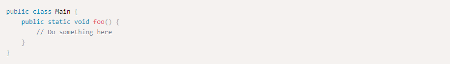
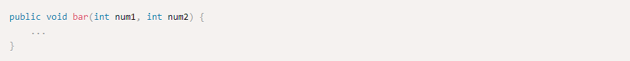
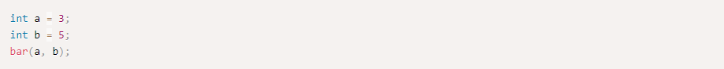
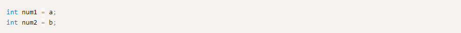
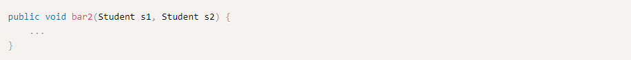
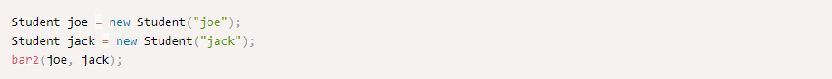
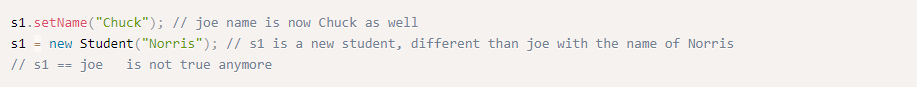
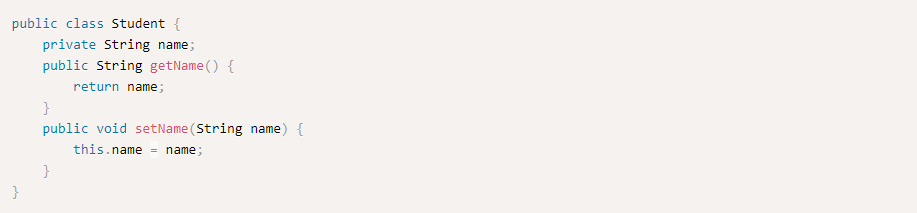
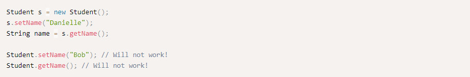

Functions
In Java, all function definitions must be inside classes. We also call functions methods. Let's look at an example method

foo is a method we defined in class Main. Notice a few things about foo.
Arguments
I always like to say that arguments to Java methods are passed by value, although some might disagree with my choice of words, I find it the best way to explain and understand how it works exactly.
By value means that arguments are copied when the method runs. Let's look at an example.

Here is a another place in the code, where bar is called

You can picture in your head that when bar(a, b) is run, it's like in the beginning of bar the following two lines are written:

And only then the rest of the method is run.
This means that a value get copied to num1 and b value get copied to num2. Changing the values of num1 and num2
will not affect a and b.
If the arguments were objects, the rules remain the same, but it acts a bit differently. Here is a an example:

And here is how we use it

Again we can picture the same two lines in the beginning of bar2
But when we assign objects, it's a bit different than assigning primitives. s1 and joe are two different
references to the same object. s1 == joe is true. This means that running methods on s1 will change the object joe. But if we'll change the value of s1 as a reference, it will not affect the reference joe.

Non static methods
Non static methods in Java are used more than static methods. Those methods can only be run on objects and not on
the whole class.
Non static methods can access and alter the field of the object.

Calling the methods will require an object of type Student.
